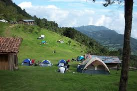
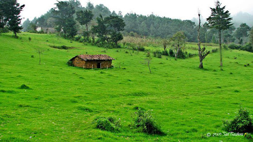

Chalatenango es un departamento de El Salvador. Su cabecera departamental es Chalatenango, se encuentra ubicado al norte de la capital del país, San Salvador, fronterizo con Honduras. En este departamento se ubica el cerro El Pital con 2730 m de altitud sobre el nivel del mar, el punto más elevado del país. El clima más frío de El Salvador tiene lugar en estas alturas.
Chalatenango obtuvo el título de villa en el año de 1847 y fue elevado al título de departamento por decreto legislativo del 14 de febrero de 1855, en una ley sancionada por el Presidente Coronel José María San Martín. Su cabecera lleva por nombre Chalatenango, durante su fundación constó de los distritos o partidos de Chalatenango y Tejutla, creados desde 1786 y de Dulce Nombre de María erigido por ley del 15 de julio de 1919.
La religión en Chalatenango hay 2 religiones que se practican mucho entre ellas estan el Catolicismo y el Protestantismo. El Catolicismo representa el 87% de la población y el protestantismo representa el 10%. Mientras que el 2% de la población no pertenese a ninguna religión y el 1% pertenecen a otras religiones.
>| Apartado 1 | Apartado 2 |
|---|---|
|  | La Palma esta limitada al norte con Citalá y San Ignacio, y muy cerca de Honduras, este es uno de los municipios más visitados del departamento de Chalatenango cada día puede ver turistas en sus calles recorriéndolas para visitar todas las tiendas de artesanías y plazas que hay en el lugar, es el lugar ideal para llevarte un recuerdo de El Salvador muy autóctono. |
|  | Hablar de San Ignacio es hablar de uno de los puntos de atracción turística más importantes del departamento de Chalatenango y del país gracias a su clima placentero y bellas montañas. San Ignacio está localizado en la parte norte del departamento de Chalatenango, se encuentra a 87 km de San Salvador, a 5 km de La Palma y 8 kilómetros de El Poy, la frontera con Honduras. |